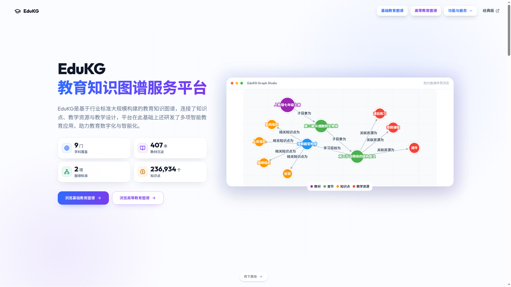
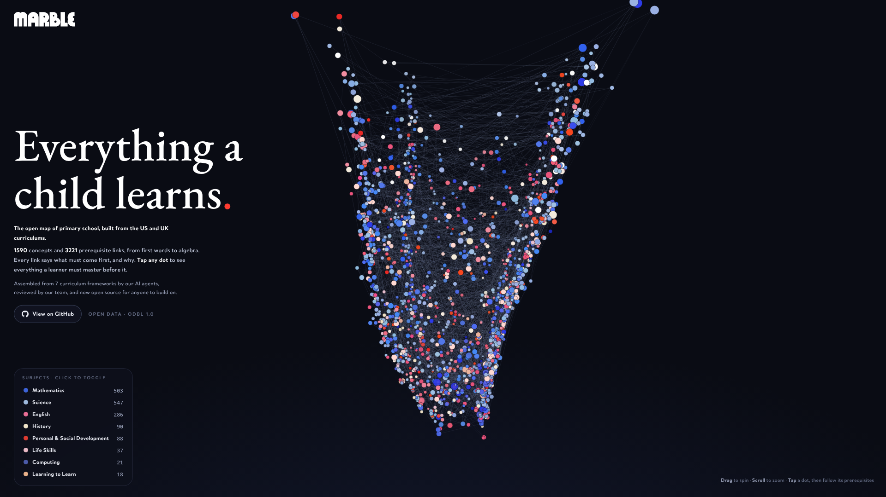
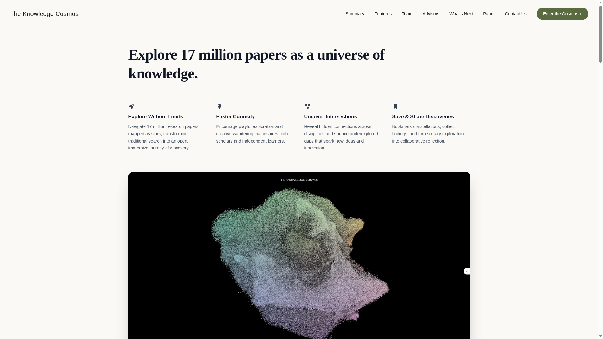
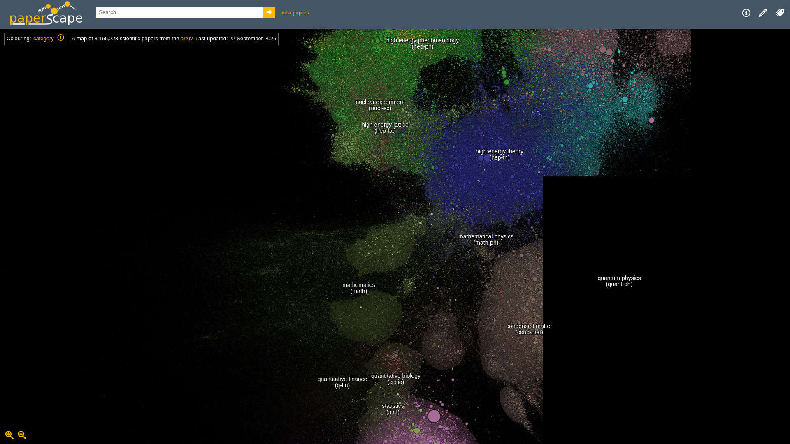
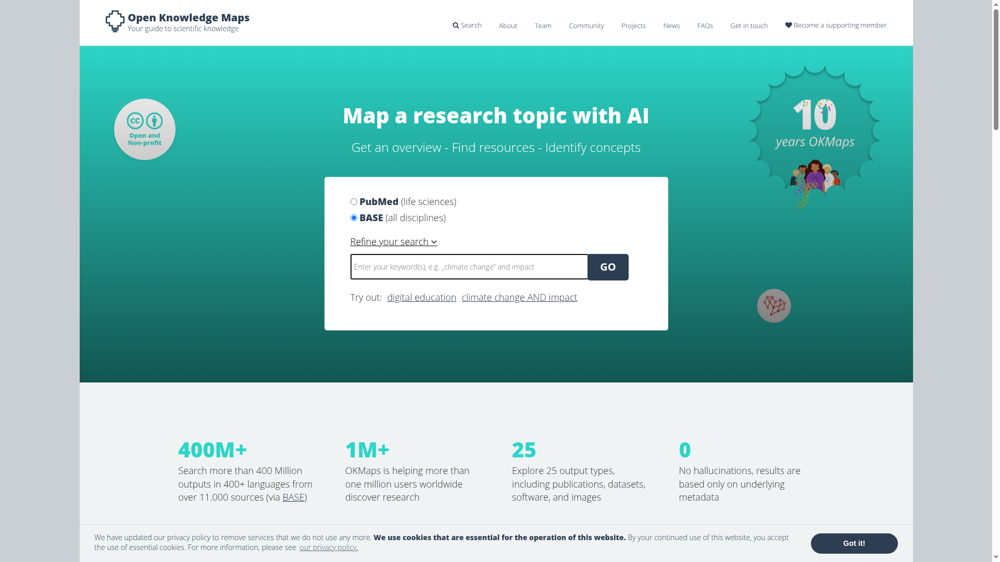
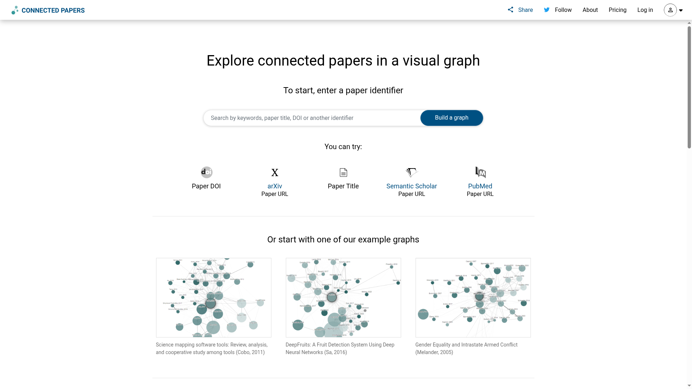

236,934 个知识点路标 01
EduKG · 教育知识图谱服务平台
edukg.cn ↗把小初高教材知识点，全部串成一张图
北师大未来教育高精尖创新中心出品：前后置依赖、学习脉络、知识点寻路——输入任意两个知识点，自动画出最短学习路径。首页实拍：9 门学科、407 本教材、236,934 个知识点。
内部汇报分享 · 调研方法论
把一身调研本领，成体系交给团队
——从五个职业，到一套方法论
v3 · 增补：知识宇宙开场 · 起转承合叙事
调研的终点不是几十万字报告，
而是猎捕那个异常的数据点。
没有什么是真的无限的——六个网站，六张知识的地图
人们常说"吾生也有涯，而知也无涯"。但严格来说，没有什么是真的无限的——即使是大海，甚至是宇宙，都是可计量的，只是人类的寿命太短暂，短到把"很大"误读成了"无限"。
九年义务教育，就那么些知识，却要学九年——不是因为知识太多，而是因为循序渐进有成本：每个知识点都站在前一个知识点的肩膀上。放大到每一个学科去看，它的知识图谱里，就是一个研究领域和一个光点。
吾生也有涯，而知也并非无涯。
知识是一片宇宙——而宇宙，是可以被计量的。
一段坦白：因为我必须真的了解底层原理——循序渐进、依赖关系、构成所有的知识点——所以我到处寻找"知识的地图"。下面六个网站，是这趟寻找的路标。

236,934 个知识点把小初高教材知识点，全部串成一张图
北师大未来教育高精尖创新中心出品：前后置依赖、学习脉络、知识点寻路——输入任意两个知识点，自动画出最短学习路径。首页实拍：9 门学科、407 本教材、236,934 个知识点。

1,590 概念 · 3,221 前置边开源 3D 课程星图："Everything a child learns"
每个光点是一个概念，线条是前置关系，可旋转缩放；点开任意一个点，能一路追出"必须先学会什么"。实测：1,590 个概念、3,221 条前置依赖边，由 7 套美英课程框架组装，ODbL 协议开源。

1,700 万篇论文Research, re-imagined——能飞进去的论文宇宙
1,700 万篇论文做成语义向量化宇宙：方向相近的论文自动聚成星系与星座，学科边界像星云一样晕开——像逛宇宙一样，飞入任何一个研究领域。

3,165,223 篇论文arXiv 全量论文的引用关系星图
3,165,223 篇论文（2026-09-22 更新）：圆点大小等于被引次数，可按学科、按年代着色——一片星空的明暗，就是一片领域的兴衰。

4 亿+ 文献 · 100 万+ 用户输入一个主题，AI 自动生成一张研究地图
可检索 4 亿+ 文献输出（BASE），服务 100 万+ 用户，承诺 0 幻觉——只基于元数据作图，不编造任何一篇文献。

一键成图输入一篇论文，一键画出它的邻域关系网
相似论文、前驱工作、衍生工作一次铺开——从任何一篇种子论文出发，看清它在知识宇宙里的坐标。
以上六个网站，全部属于图书情报学与知识图谱的范畴。
而今天要讲的这套调研方法论，就用情报学的叙事串起来：
咨询、科研、情报——表面是三个行业，底层共享同一台引擎：溯因式推理。
知识并非无涯，
是可以数清光点的宇宙
第01章 · 知识宇宙
数据之大，不在于其大，
而在于其全
方法论主体各章
在宇宙中找到黑洞——
猎捕异常数据点
第02 / 09 / 12章
从反常里长出项目，
长成愿景
第18章 · 愿景
调研不是写报告，是在海量常态数据中猎捕"反常"
先讲一个故事。我们曾把锦州翻了个底朝天——爬了锦州所有区县的报告，又爬了周边四座城市的报告。几十万字材料铺开，最后真正值钱的，只有几个数字。
这两个异常点，直接指向一个判断：食品加工企业应该怎么样。不是"可以做什么"的泛泛之谈，而是从反常数据里长出来的、有落点的判断。
这就是本次分享的全部出发点。绝大多数时间里，我们面对的是常态数据：正确、完整、体面，也毫无信息量。真正的功夫，是在这片常态的海洋里，辨认出那个不合群的数据点——然后追问它、验证它、把它变成一个项目。
调研不是写报告。
调研是在海量常态数据中，猎捕"反常"。
接下来的内容，就是这套"猎捕"手法的完整拆解：先抬头看知识的地图（知识宇宙），再看它从哪里来（五个职业）、在哪片泥里长成（义乌三地考古），按什么坐标系展开（六维框架），用什么流水线执行（三级调研），以什么结构成文（四线研究法），思维如何从点、线、面一路升到体（点线面体），靠什么引擎发现亮点（溯因推理），以及如何取数、如何提问、如何用穷尽思维知道"查完了"，如何守住数据纪律。
这套方法论不是想出来的，是一段一段职业淬炼出来的
让人开口，问出纸面上没有的东西。真正的信息不在通稿里，在被访者犹豫的那三秒钟里。
产业链拆解、规模测算、对标分析。把任何一个行业拆成一张结构图，再估出每一块的大小。
结构化地盯住对手——从产品到组织，对手每一次改版、每一次组织架构调整，都是情报。
卫星坐标、招投标公告、裁判文书、工商数据——一切公开源皆是情报。秘密不在墙内，在没人拼起来的碎片里。
穿透式核查：股权、债务、诉讼，一个数字对不上就要追到底。不相信任何一层表象，只相信穿透后的结构。
对每一个区县、每一个地级市做深度立体调查——
直到能从中谋划出一个项目。
义乌三地：北苑街道 → 后宅街道 → 义亭镇农贸市场
在讲框架之前，先做一次考古。很多人以为"六维框架"是坐下来设计出来的——不是。它是在义乌连打三仗之后，清点弹药时才被发现早已成形的。回头看，每一仗都在逼框架长出新的一维。
第一仗在北苑街道。一开始的直觉是抓住一个最强维度打穿——比如只讲人口，或者只讲企业。写出来就发现不对：任何单一维度都说不清一个街道。人口在流入，但流入的人去了哪些企业？企业密集，但为什么偏偏密集在这个路口而不是那条街？问题与问题之间互相咬尾，单一维度给出的每个答案都在引出另一个维度的问题。
这一仗的战利品不是一份报告，是一个教训：维度少了，故事就讲不圆。"五维分析法"的雏形——把对象按几个正交的侧面同时摊开——就是在北苑被迫想出来的。
第二仗在后宅街道，框架第一次以完整形态出手：人口、地理、企业、流量、历史五份深度报告各成一卷，最后以一份市场调研建议书收口——五维摆事实，建议书出判断。
这一仗还练出了一个关键动作：规上企业名单的多源交叉印证。同一份名单，用不同来源互相对撞——对不上的逐条追。名单不再是抄来的表格，而是被交叉验证过的情报资产。到后来回头看，"投资"维度的材料已经在各卷里反复出现，只是还没单独立卷——补上它，五维就升级成了六维。
后宅报告群的直接产出是洞见驱动项目谋划：不是"情况汇总"，而是从六维交叉处长出来的项目点子。这一仗的完整战果，见第十六章案例五。
第三仗刻意把尺度压到最小：下沉到义亭镇的乡镇级农贸市场。一个乡镇市场，人口以摊贩和赶集人计，地理以摊位和动线计，历史以几代人的赶集记忆计——六维在这么小的尺度上依然一维不缺，每一维都取得到数、问得出问题。
这一仗验证的是框架的尺度不变性：从街道到乡镇市场，框架不塌。一个框架只有在比它诞生的战场更小的地方依然成立，才配叫框架。
方法论不是设计出来的，
是打完三仗以后清点出来的弹药。 ——先有其战，后有其法；先有手感，后有坐标系
拆解对象的坐标系——任何对象先按六维摆平，再谈深入
这就是第四章那三仗清点出来的坐标系——它从义乌三地的泥里长出来，现在交给团队，当作任何调研的第一动作。
一个地方最底层的底盘
空间决定成本与半径
市场主体的真实构成
交易与辐射的能级
时间是产业的裁判
钱的流向即真实意图
点击卡片 · 展开各维度的具体观察项
全国 → 省 → 市：一条产业链按三级展开，层层递进
一条产业链，按三级展开：全国格局 → 全省集群 → 本市企业。每一级都不是泛泛而谈，每一级都附 URL 溯源——每一个论断都能点回原始出处。
产业链全貌、头部集群、规模与分工。先知道这条链在中国版图上长什么样。
省内的产业带、集群分布、关键环节落位。看清本省在这条链上的位置。
落到具体企业名单：谁在做、做什么、做到哪一步。调研的终点是名单，不是形容词。
调研深度不该凭感觉，应该档位化。以溯源 URL 数量为刻度，三档控制调研深度：
用关键词把这条链上值得读的页面全部找出来。
逐个 URL 抓取正文，压缩成结构化摘要，保留出处。
把摘要按框架融合成报告——带溯源、分档深度、层层递进。
产业全貌与分工版图。
辽宁省的预制菜集群落位。
落到本市的企业名单。
报告的元结构：纵线追时间，横线定坐标，斜线审禀赋，交叉出判断
报告不是资料的堆叠，是线的编织。v1 里它叫"横纵分析法"，两条线；实战中发现还缺一条——审视本地禀赋的斜线。补全之后是四种线：纵线、横线、斜线、交叉线。每一篇报告拆到骨头里，都是这四线的编织物。
对一个关键词做历时叙事：这个行业从哪里来、经过哪些拐点、现在站在哪一段。 例：服务业就业理论——从 Clark 到 Baumol，一路追到 AI 时代。 一个概念在时间里怎么演化，决定了它今天站在哪。
对一个关键词做共时对比：同一时刻，全国标杆与世界水平做到哪一步，我们在哪一格。 例：生产性服务业五国对比。横线负责消除"自以为不错"，把本地锚定在世界坐标上。
v2 新增的第三条线：审视本地资源条件与独特性——区位、物产、人、历史留给我们的牌。 斜线回答的不是"别人怎样"，而是"我们手里到底有什么"，让纵横两条线的结论能落到这块地上。
纵、横、斜三线相遇产生的交织判断，才是"研究面"的真正产出。例：中美差距不在服务业， 而在与制造业耦合的知识服务层——这句话任何一条单线都给不出，只有交叉处才有。
数一遍：这篇报告里纵线有几条、横线有几条、斜线有几条、交叉线有几条。 缺线的报告是半成品——只有纵线会变成编年史，只有横线会变成排行榜，只有斜线会变成自卖自夸。 然后去重、重织——把线合并成浑然一体的一篇，而不是一捆平行放置的电线。
把对象摆上坐标系。
把材料流水线式收回来。
把材料织成有交叉判断的报告。
从一条线到一个世界模型——思维的四级台阶，"立体"二字的全部分量
为什么叫"立体调研"？这一章给出全篇的理论答案。思维有四层：线性思维是一条线，树形思维是一个平面，网状思维是多个平面的编织，立体思维是点线面体齐备。调研质量的差距，本质是思维层级的差距。
因为 A 所以 B，因为 B 所以 C。能讲故事，但只有一个方向—— 遇到多因多果的现实，线一拉长就断。
一张思维导图：一条主线，若干支线，合起来铺满一个平面。 这是大多数"结构化思考"的终点——但只是第二层。
多张思维导图叠在一起：有主线、有支线，关键是有旁线—— 纵横经纬，多个平面编织成网。网开始有了"体"的雏形。
六维 = 六张导图，维维之间有旁线相连，合起来是一个体。 点（数据点）、线（因果链）、面（单维结构）、体（多维模型）——齐备。
树形只有主线和支线——所有连接都服从层级，同一层级的两个分支之间没有路。 网状多了一样东西：旁线——维与维之间的横向连接。 人口维的一个发现，可以直接连着企业维的另一个发现，不必绕回根节点。
旁线才是洞见的产地。第二章锦州的两个异常点之所以值钱，恰恰因为它们之间有一条旁线： "风味食品有特色"（产业维）连着"大学生在增长"（人口维）—— 两条支线一接通，"食品加工企业应该怎么样"的判断就浮出来了。树形结构里，这条线不存在。
这个抽象层级，在每天用的工具里有精确的对应物：
章、节、小节——一棵目录树，对应数据库表的横纵列结构。线性与树形的容器。
一张表是一个二维平面；多个 sheet 通过引用关联，组成的工作簿就是一个数据库的雏形。
表与表靠主键外键互相连接——那就是旁线。立体调查落到工具上，就是数据库式调查。
这条路的工业级样板是 Palantir 的 Ontology（本体论）： 把现实世界的人、物、事件、关系，建模成对象（Object）与连接（Link）， 让组织里的每一份数据都挂到一个可查询的世界模型上。 顺着它想下去会得到一个不太温柔的猜想：数据库思维可能才是真正的立体思维—— 纸上画出再多的维，不如把对象与关系建进一个能 JOIN 的结构里。
关系型数据库（以 PostgreSQL 为代表）的三个特点，与调研建模一一同构： 关系——表与表的连接，就是维度间的旁线； 约束——主键、外键、非空，就是第十四章的数据纪律； 可连接查询——一条 SQL 把多张表临时织成一个面，就是第七章"四线相交出判断"的工程版。
所谓全方位立体调查，
就是给调查对象建一个可查询的世界模型。 ——点线面体齐备，且每一维都能被追问
找亮点的认知引擎——三种推理，只有它产生新知
看见了一百次日出，推断明天太阳照常升起。
它给的是概率——大概率对，但没有新东西，只是既有经验的延长线。
人都会死，苏格拉底是人，所以苏格拉底会死。
它给的是确定——结论早已含在前提里，同样没有新东西。
草地湿了 → 最可能是昨夜下雨了 → 去验证：查气象记录。
它给的是假设——三种推理中，唯一产生"新知"的一种。
归纳给概率，演绎给确定，溯因给假设。
——调研要的不是复读已知，而是提出可验证的新解释
回到第二章的锦州。这条溯因链是这样跑的：
取数的核心动作不是"找"，是"匹配"
你到底要问什么？把模糊意图变成可回答的问题。 "了解一下冷库"不是问句；"冷库都在哪、多大、谁运营的"才是。
什么数据、什么渠道，能回答这个问题？ 公开源远比你以为的富有——前提是知道去哪一路找。
问题域里拆出的每个子问题，都必须在解答域里找到对应数据源。 匹配不上，只有三条路：换问法、换数据源，或者——承认这是情报空白，如实留白。
问题域只有一句话："冷库都在哪、多大、谁运营的。" 解答域铺开是五路公开源，并行采集、交叉印证：
五路公开源拼起来，就是一张没有花一分钱买数据的冷库地图——这套打法的完整战果，见第十六章案例二。
一个大问题，爆炸成一棵每片叶子都可回答的问题树
调研中最贵的资产不是问题本身，而是问题的拆解结构。 一个大问题爆炸成一棵子问题树：每个卡点逐级往下拆，直到每一片叶子都落在两种终点之一—— "可回答"，或者"可现场核实"。
公开报告、统计数据、公告文书能答掉的，出发前全部答掉，不占现场一分钟。
凡是"纸面上查不到、电话里问不清"的，进入现场核实清单——23 条，一条一条当面销号。
每个关键问题按同一纪律拆解：拆到每片叶子"可回答"或"可现场核实"为止。此处从略，结构完全相同。
执行顺序是铁律：线上先答掉桌面研究能答的，剩下的才形成现场核实清单带去义乌—— 到了现场，只问"只有现场才能问到的"。带着弹药去现场，而不是带着空白去现场。
最后，全部问题入库，形成"问题爆炸扩散数据库"： 问过的问题、得到的答案、悬而未决的未决项，全部可复用、可迭代。 下一个项目不是从零开始，而是从上一棵问题树的枝干上继续爆炸。
给"信息量"一把尺子，很多废话会当场现形
信息量 = 意外度
I = −log₂ p · 一件事越不可能发生，它发生了，信息量越大
"太阳照常升起"——概率 ≈ 1，信息量 ≈ 0。正确，但等于没说。
每一条新信息必须带来增量，否则就是废话。 所谓"AI 填充物"，本质就是零增量信息的密集排列——每句话都对，整篇读完一无所获。 用它审稿，一测一个准。
能改变决策的信息，才叫情报。 不能改变任何决策的"知识"只是库存——存得再多，不产生一个动作。
异常数据点意外度最高 → 信息量最大 → 最可能是有效情报。 这就是为什么第二章说要猎捕异常——不是审美偏好，是信息论推出的必然。
老调研人身上有一类东西，用起来不着痕迹：什么时候该换关键词、哪个数字一看就不对、 哪种报告直接跳过。这些"小习惯"就是隐性知识。
把隐性知识成体系地讲出来、教给别人，就是把隐性知识显性化——这正是本次分享的目的。
数据之大，不在于其大，而在于其全
大数据时代人人谈"大"，但调研真正需要的是另一个字：全。 大而不全的数据是迷雾，小但穷尽的数据才是地图。 穷尽思维的第一步，是知道你的对象"全国总共就多少"。
数据之大，不在于其大，而在于其全。 ——当你知道总共就多少，你才知道什么叫"查完了"
省级、地级、县级、乡镇街道四级——中国行政版图的完整格子数。
法律数百件、行政法规数百件、地方性法规上万件、规章数万件——规则体系是可穷尽的。
一级学科、二级学科、三级方向——全部通览过，知识版图有边界。
全国登记在册的 GI 农产品——每一个都有名有姓有产地，可以逐个过完。
总量、年龄、城乡、受教育程度——普查与年鉴把人口结构摊到区县一级。
任期、履历、分工全部公开在册——不填数字，因为它不是量级问题，是逐人可枚举问题。
营业里程、泊位、路网等级——基础设施清单在公报与年鉴里完整躺着。
扩展全球：联合国会员国 193 个，加观察员与地区，全球也就两百个格子。
放进这些格子之后，任何对象都不再是"深不可测"，而是"坐标明确"。
MECE（相互独立、完全穷尽）是好纪律，本方法论的六维划分就受它约束。但不迷信： 现实中的数据库之间允许重叠——行政区划与地理标志重叠，人口数据与企业数据重叠。 重叠不是脏数据，是交叉验证的接口：同一件事在两个库里能对上，才可信； 多个数据库的重叠部分，正是共同模拟仿真的黏合层。
先定义总体边界，再谈样本——"总共多少"是统计学第一问。
面板数据把每个个体、每个时期都纳入模型。
有限集合皆可遍历；建库即建索引。
穷尽所有部分之后，重点转向部分之间的关系。
了解一件事，习惯从它的源头讲起：研究一部法律，就从立法史讲起——它哪年首次颁布、历次修订改了什么； 研究一个行业，就从产业史讲起——它什么时候落地中国、经历过哪几轮洗牌。 溯源不是掉书袋，是穷尽思维在时间轴上的版本：空间的穷尽靠枚举，时间的穷尽靠溯源。
穷尽不是表演，是极限思维的副产品。
最终指向一个真世界模型——
把真实世界建成可模拟、可仿真的模型。 ——《游戏改变世界》简·麦格尼格尔：游戏化是组织复杂系统的方式；仿真，是理解复杂系统的终点
呼应第一章的知识宇宙：EduKG 和 Marble 画的是九年义务教育的图谱；这套方法论画的，是任意一个区县、任意一条产业链的图谱——同一件事，换了对象。
方法论决定调研能走多快，纪律决定调研能走多远
任何数字必须附带口径词——是交易额、产值、货值，还是全产业链估算？ 拒绝宣传口径。一个不带口径的数字，比一个缺口更危险：缺口让人警惕，裸数字让人误判。
每个数字标注来源等级，分级展示、绝不混用：
辽西冷库地图上，搜不到面积的冷库保持小图标——它作为一个真实的情报空白点被呈现出来， 而不是被编一个数填满。报告后附诚实的数据缺口清单（如阜新缺公报实数）。 空白本身也是情报：它告诉下一步该去哪挖。
宁可降格理论框架，也不虚构证据——"看不出协同，就诚实写分别应用"。 判断"协同"是否真实，有三个可验证标准：
从"能否做"，到"份额从哪抢"
以全国领先地区、头部企业为基准。
逐项量出与基准之间的距离。
差距翻译成可执行的追赶路径。
地方特色风味食品。
审视"超越"的可行性路径。
问的不是能不能做酱菜——是锦州小菜凭什么走出一条通向头部水准的路。
本地产业承载平台。
验证"份额从哪抢"。
产业园不是盖出来的，是从头部企业的订单结构里抢出来的。
锦州方向的冷链集散设想。
一期 643 亩、二期 543 亩。
基准的体量摆在那里——对标先量纲，再谈雄心。
论证焦点的升级：
不问"这事能不能做"，
问"份额从谁嘴里抢"。
方法论不是理论，是五个已经跑完的项目
从损耗里做产业：设计腌渍菜 + 烧烤预制两条加工通道， 共用冷库 + 加工车间 + 锦州港出海口，三层全球证据链逐级支撑。
已上线交互报告 → tongjixinzhi.cn
搜不到的一律不编造。语义化 SVG「仓库 + 雪花」图标、五市专属配色、 图标大小按实测占地五档分级——地图本身就是数据纪律的演示。
勘误一例：清单中的"东北新发地（锦州太和区）"经核实，实际在盘锦兴隆台区——已如实标注更正。
桌面研究能答的出发前全部答掉，现场只问"只有现场才能问到的"—— 带着弹药去现场，每一分钟都花在增量信息上。
2025 年，蚌埠法院冻结何飞龙 9800 万股权（98% 全部冻结）， 而何可人的 2%（200 万）恰恰不在冻结清单里—— 这一个异常点，改变了整个风控结论。
第四章第二仗的完整交付：规上企业名单多源交叉印证， 五维报告摆事实、建议书出判断——洞见直接驱动项目谋划， 这也是"六维框架"从五维补齐升级的现场。
方法论来历 → 见第四章 · 义乌三地
一次克制而诚实的坦白——关于这套框架为什么长这样
坦白一件事：我是 AuDHD——ADHD（注意缺陷多动障碍）与 ASD（孤独症谱系）的混合。 说这件事不是为了煽情，是因为它恰好解释了这套方法论为什么长成这个样子。
兴趣雷达永远开着，什么都要扫一眼——天生的全网雷达。五个职业、几十个行业，不是规划，是雷达的自然轨迹。
看到零散的东西就想建表、归类、穷举——天生的数据库建表冲动。学科目录要全部通览，行政区划要数到乡镇，都来自这一半。
两者叠加 = 网状思维的大脑原生配置：雷达负责扫，建表冲动负责织。
所以对系统论、数据库、计算之美的追求，了解一件事就想从盘古开天辟地开始、想把全世界建模—— 这些不是修养，是神经结构的默认设置。穷尽思维、六维框架、问题爆炸数据库， 都是这颗大脑为了把自己安顿好而长出来的外部支架。
方法可复制，大脑不必复制。
——你不需要我的神经结构，你只需要我的框架。框架的价值，恰恰是它外化了我的认知方式：我脑子里自动发生的事，被拆成了任何人都能执行的步骤。
说到底，这套方法论是一个大脑为了自救而造的外部系统—— 现在它是团队的公共财产。这大概是 AuDHD 最体面的一次就业。
方法论的三次固化，和一次身份转变
习惯 —— 长在脑子里的坐标系
工具 —— 可复用的调研流水线
产品 —— 部署在自己的服务器上
投行不是牌照，是能力。 能对任何一个区县做到"比当地人更懂当地"，项目就会自己长出来—— 投行资格不是前提，是这套能力的结果。
所有方法论，最后都指向同一个动作——
在常态里发现反常，
在反常里看见机会。
这套方法论站在哪些肩膀上——每一章的概念都能在这里找到出处
信息量 = 意外度。"有效情报"的全部度量衡来自这里。→ 支撑第十二章
第三种推理的提出者：从异常反推最佳解释。调研认知引擎的哲学源头。→ 支撑第九章
隐性知识 / 默会知识："我们知道的比我们能说出的多。"→ 支撑第十二章
整体大于部分之和——穷尽之后，重点转向关系。→ 支撑第八、十三章
MECE 法则的出处：相互独立、完全穷尽。我们尊重它，但不迷信它。→ 支撑第十三章
本体论建模的工业级样板：把现实世界建成对象与连接。→ 支撑第八章
游戏化是组织复杂系统的方式——仿真思维的大众读本。→ 支撑第十三章
世界模型的技术源头：让智能体在内部模拟世界里学习与推演。→ 支撑第十三章
关系型思维的工程实现：关系、约束、可连接查询。→ 支撑第八章
批判性提问入门——问题链与问题树的平民版起点。→ 支撑第十一章
现场只讲骨架，细节留给滚动——两个时长的讲法
只讲主线钩子，其余章节现场标注"自读"
在 30 分钟骨架上加讲四章理论与自白
方法已经摆在桌上，欢迎任何追问与交锋——
一个问题被问倒的地方，就是这套体系下一次升级的地方。